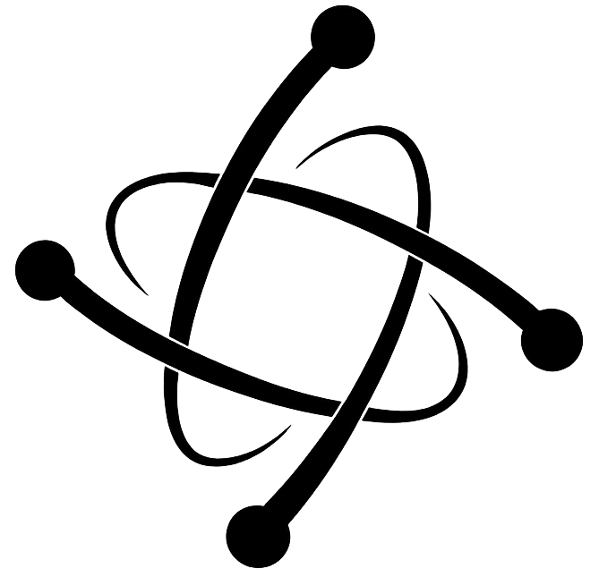

System status — operational across 3 regionsREC. 2024 · INDEX 01 / V.04
AI infrastructure built to be trusted by institutions.

Atomic AI builds human-centered AI infrastructure for institutions and enterprises —
deployed where the work is real, not where the demo ends.
Mentor systems, institutional knowledge platforms, semantic retrieval, and operational intelligence — engineered for environments that cannot tolerate guesswork.
Each platform is an end-to-end deployable system — not a workshop, not a slide. Built bilingually, instrumented from day one, integrated with the institution's own infrastructure.
01 / MENTOR-SYS
AI Mentor Systems
Conversational AI that supports entrepreneurs, students, and frontline workers — over WhatsApp, web, and voice. Long-horizon memory, contextual recall, vernacular guidance.
Live · Mia · HN/CR↗
02 / KNOWLEDGE-PLAT
Institutional Knowledge
Centralised, version-controlled memory for organisations. Policies, procedures, regulatory documents — searchable in natural language, with citation trails back to source.
In deployment · ACTEMP/ILO↗
03 / OPS-INTEL
Operational Intelligence
Real-time monitoring, anomaly detection, and executive dashboards for high-stakes infrastructure. From solar plants to logistics fleets — live, alerting, integrated.
Live · Potenza↗
04 / LEARN-SYS
AI Learning Systems
Adaptive curricula, simulated tutors, and capacity-building programmes for technical teams adopting AI responsibly. Built for educators and public-sector training bodies.
Pilot · Q3 2026↗
05 / RETRIEVAL
Semantic Retrieval
Retrieval-augmented infrastructure with provenance, hybrid search, and cross-lingual embedding. Engineered to answer institutional questions — not consumer queries.
Production · multi-tenant↗
06 / WORKFLOW-AI
Enterprise Workflows
Decision-support tooling embedded into existing enterprise systems — copilots, triage agents, structured automations — engineered to fit, audited end-to-end.
Live · 4 sectors↗
INDEX 03 / PRINCIPLES
How we build. Four commitments.
These are not slogans — they constrain what we ship. A system that violates one of them does not leave our workshop.
01 / GROUNDED
Every claim, cited.
If a system cannot show its source, it does not ship. Provenance is a design requirement, not a footnote.
02 / OWNED
The institution keeps its data.
Documents indexed by our systems remain the property and custody of the deploying organisation, end-to-end.
03 / BILINGUAL
Spanish first, English equal.
Native bilingual systems — not translation layers. Vernacular, voice, and code-switching handled at the model boundary.
04 / MEASURED
Instrumented from day one.
Every deployment ships with observability, evaluation harnesses, and an honest dashboard for the people accountable for it.
INDEX 04 / DEPLOYMENTS
Active systems in production.
A working map of deployed systems, live pilots, and capabilities tied to real operators and partner programmes.
IDSYSTEMORGANISATIONREGIONSINCESTATUS
D-001Mia — AI MentorCCIT · ACTEMP / ILOHN · CR2024Live
D-002Potenza — Solar OperationsPotenza CorpSV2024Live
D-006AI Literacy — Training programmesTeams and institutionsLATAM2025Available
INDEX 05 / TRUST
Selected collaborations.
We work alongside multilateral organisations, national chambers, and enterprise operators. A short list, not a logo wall.
I — MULTILATERAL2024 — PRESENT
ACTEMP / ILO
Bureau for Employers' Activities · International Labour Organization
Multi-year collaboration on the Mia mentor system across ACTEMP programmes in Honduras and Costa Rica.
A public mentoring channel that operates twenty-four hours a day,
in Spanish, grounded in ACTEMP curricula.
II — TRAINING2025 — PRESENT
ITCILO
International Training Centre · International Labour Organization · Turin
Knowledge-gateway pilot for capacity-building curricula — semantic retrieval across multilingual training corpora,
with citation provenance back to each authoritative source.
III — CHAMBER2024 — PRESENT
CCIT
Cámara de Comercio e Industria de Tegucigalpa · Honduras
Co-deployment partner for Mia in Honduras. Mia serves CCIT-affiliated entrepreneurs through their formative first decisions —
a mentor on the chamber's behalf, at the scale of WhatsApp.
IV — CHAMBER2025 — PRESENT
CANACODEA
Cámara Nacional de Comercio Electrónico y Software · El Salvador
Strategic partner for AI infrastructure and software collaboration across the Salvadoran IT sector — a national-chamber relationship grounded in shipping production systems.
ENTERPRISE
Energy & clinical — four NDA
REGIONS
HN · CR · SV — LATAM-wide
REGISTER
Spanish · English — bilingual by default
If you run an institution
that cannot afford guesswork —
we should talk.